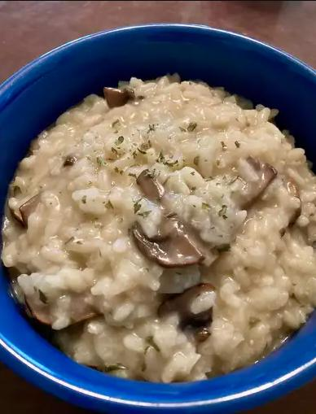

Mushroom Risotto

See above for the finished result!
Authentic Italian-style risotto cooked the slow and painful way, but-oh so worth it. Complements grilled meats and chicken dishes very well. Check the rice by biting into it. It should be slightly al dente (or resist slightly to the tooth but not be hard in the center).
Risotto ranks right up there as one of the greatest dishes you can make with rice. Originating in Italy, risotto is a recipe made by simmering a starchy variety of rice in broth, with flavor-boosting ingredients added like onions, garlic, vegetables, meats, spices, herbs, and cheese. This 5-star recipe for mushroom risotto has thousands of ratings and reviews, and is a top-rated favorite for our Allrecipes community of home cooks.
Ingredients
- 6 cups chicken broth
- 3 tbsp olive oil
- 1 pound portabello mushrooms
- 1 pound white mushrooms
- 2 medium shallots
- 1 1/2 cups arborio rice
- 1/2 cup dry white wine
- 4 tbsp butter
- 3 tbsp finely chopped chives
- 1/2 cup parmesan cheese
Steps
- Gather all ingredients.
- Warm broth in a saucepan over low heat.
- Meanwhile, warm 2 tablespoons olive oil in a large saucepan over medium-high heat. Add portobello and white mushrooms; cook and stir until soft, about 3 minutes. Remove mushrooms and their liquid to a bowl; set aside.
- Add remaining 1 tablespoon olive oil to the saucepan. Stir in shallots and cook for 1 minute. Add rice; cook and stir until rice is coated with oil and pale, golden in color, about 2 minutes.
- Pour in wine, stirring constantly until wine is fully absorbed. Add 1/2 cup warm broth to the rice, and stir until the broth is absorbed.
- Continue adding broth, 1/2 cup at a time, stirring constantly, until the liquid is absorbed and the rice is tender, yet firm to the bite, about 15 to 20 minutes.
- Remove from heat. Stir in reserved mushrooms and their liquid, butter, chives, and Parmesan cheese.
- Season with salt and pepper and serve immediately.